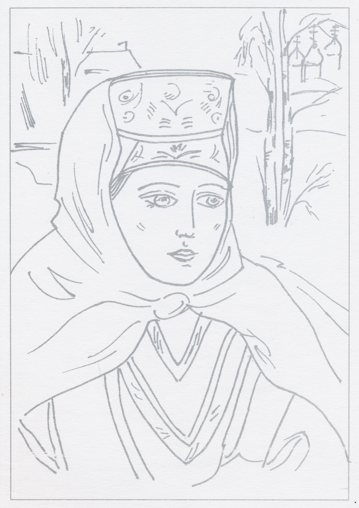
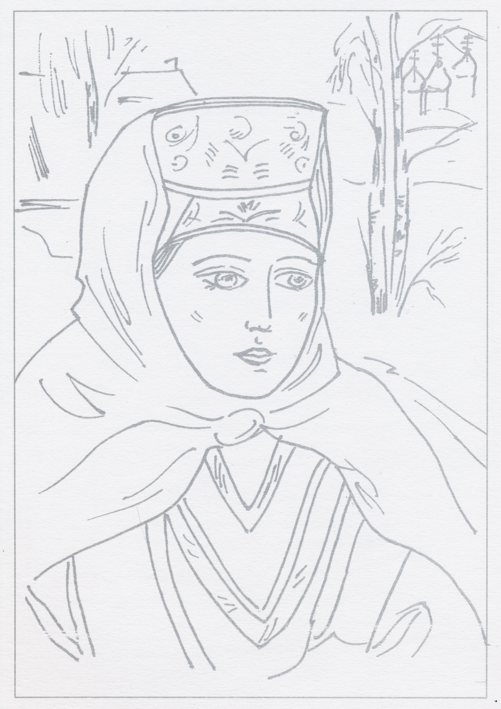

Русская азбука и детское изобразительное творчество. Раскраски, буквицы и простые прописи для детей дошкольного возраста. Москва, Детский клуб «Юный художник», издательство НИКА», 2008


Русская азбука и детское изобразительное творчество. Раскраски, буквицы и простые прописи для детей дошкольного возраста. Москва, Детский клуб «Юный художник», издательство НИКА», 2008
Альбом для юного художника. Библейские сюжеты, история России и древнерусская художественная культура в детском изобразительном творчестве. Альбом для рисования, вкладыш цветных репродукций детских работ, печать раскрасок А4 на бумаге 270 гр/м2, понтон: медь, золото, серебро, пурпур. Для детей 6-12лет. Москва, Детский клуб «Юный художник», издательство НИКА», 2008
 
Прорись с работы Казаковой Татьяны, 14 лет «Рождественское утро», картон, темпера. Детский клуб «Юный художник» в Кузьминках (Москва), педагог: Пискарева Вера Михайловна Лист для раскрасок формат А4, 270 гр., печать: понтон «серебро».